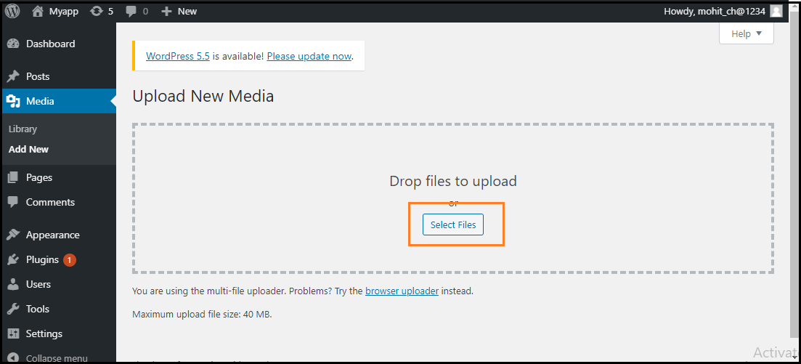
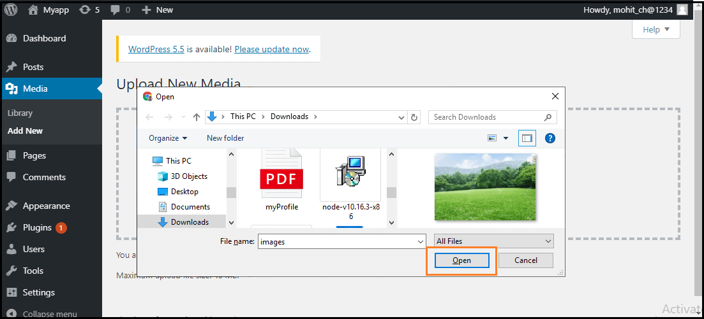
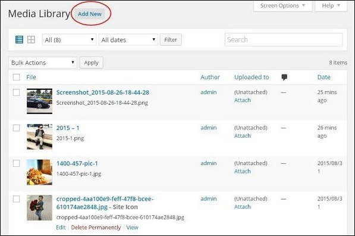
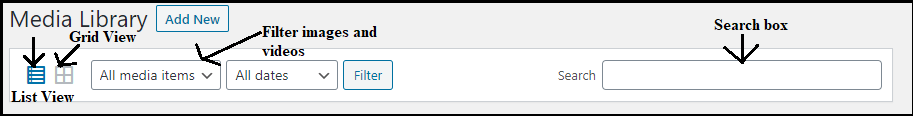
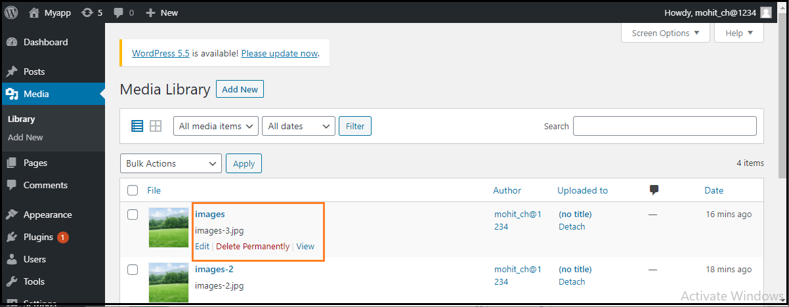
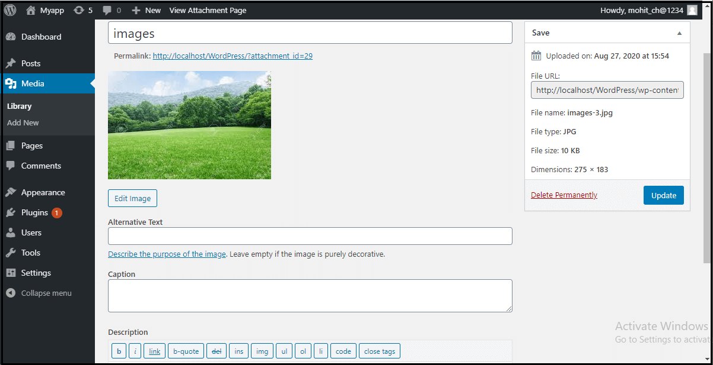

WordPress Comments
DASHBOARD >> COMMENTS
WordPress Comment
Comments are a way to allow your visitors to engage your website. Many site owners grow their outreach through commenting. Comments are generally allowed on the bottom of posts and can be nested many levels deep. You can activate or deactivate comment box. Comments are by default enabled.
Few things about Media Library
- Comments can be turned on or off If your site is a site that doesn’t need to take user comments, then you can turn them off altogether on your site.
- Reduce Spam comments by using plugins Certain spam comments can be reduced through the use of plugins such as Akismet. The use of recaptchas also help deter spammy comments on your site
- Comments can be handled by external applications You can allow applications such as Jetpack and Disqus to handle comments for your site. It takes the load off of your hosting.
On Clicking Comment option, Your WordPress theme dashboard screen will look something like this:

The theme that you see first in the list on the theme subsection screen is the active theme on your WordPress website.
Add New Media
Once you’ve clicked on Media >> Add New , you will be able to view a page to upload media.
After clicking on the Select Files, add the media files by selecting them and then click on the open button, as shown in the following screenshot.
View Media Library
Once you’ve clicked on Media >> Library , you can view media files like images, audios, videos..
We can see a menu bar in the Media Library that consists of many things like List view, Grid view, Filter the images and videos, and search box, as shown in the following screenshot
There are various tabs in the Media Library bar, which are as follows:
- List View: It shows the media files in the list form.
- Grid View: It helps to show all the media files in the grid format.
- Filter the images and videos: It filters the images and videos in the media library.
- Search box: It helps to find a media file by inserting the file name into the search box.
Edit Media Files
We can handle information about the Media File, which is stored in the Media Library.
Firstly, go to the WordPress dashboard and select the "Media" option, and then click on the "Library" option. After that, click on the media file name or the edit link. Here we can edit , delete or view media file.
Here, we will see the Media Files list. Now, we can select an image that we want to edit.
The options are as follows::
- URL: It helps us to read only a link from the media file.
- Title: It shows the media name. If the themes and plugins are designed to be displayed, the title will often show up in the galleries and attachment pages.
- Permalink: It is the media attachment page URL. It is also a link to see the attachment page of the media file.
- Edit Image button: It helps to edit the position of the image like rotate anti-clockwise, rotate clockwise, flip vertically, horizontally, crop, flip, and more.
- Caption: It allows us to provide a detailed explanation of the media file.
- Alternate Text: The alternate text for the image is used to describe media and is also used for the availability of images.
- Description: It allows us to explain the media file.
- Delete Permanently: It helps us to delete the file permanently.
After completing all these steps, click on the Update button to save the changes.